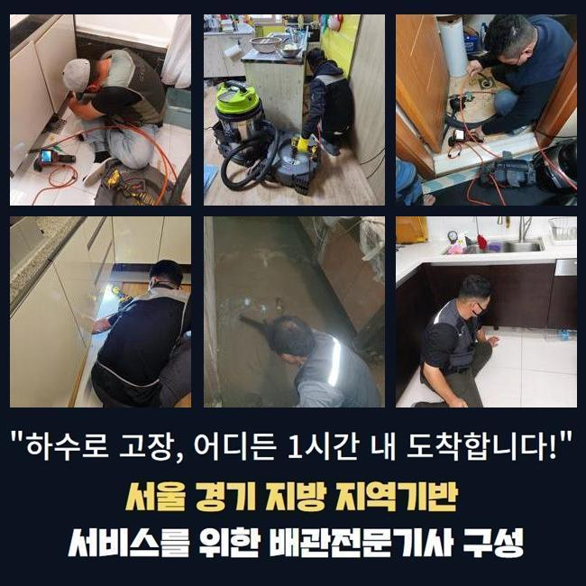
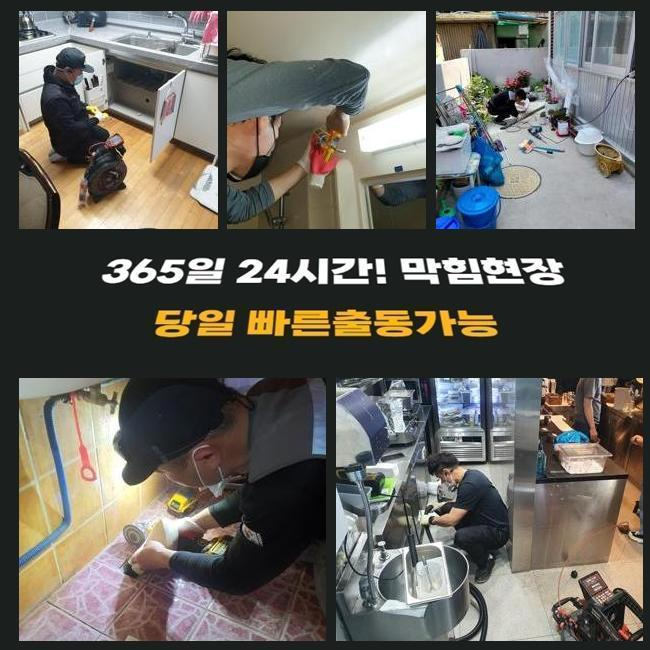
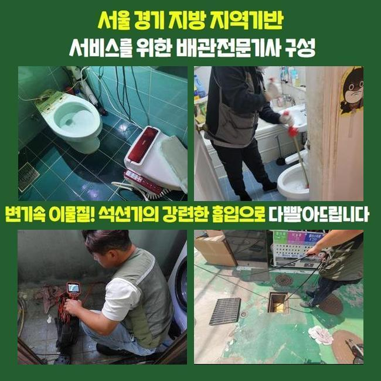
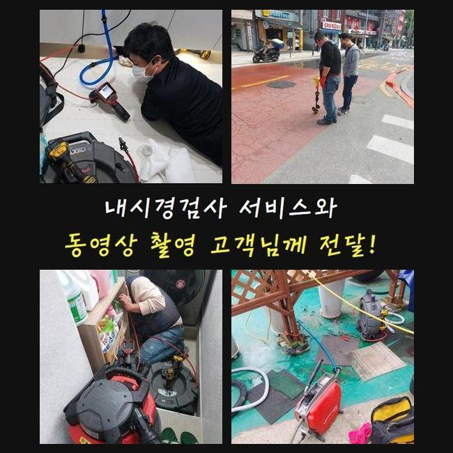
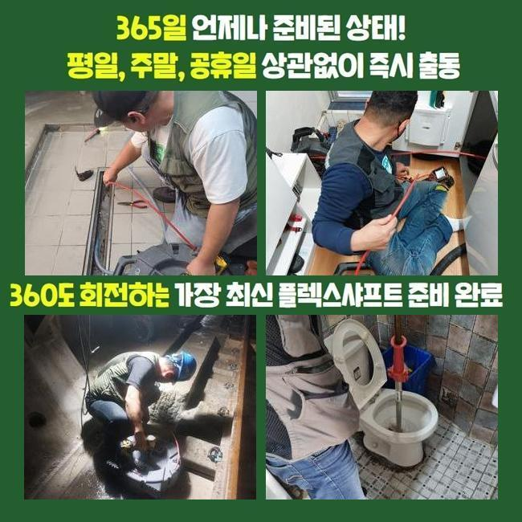
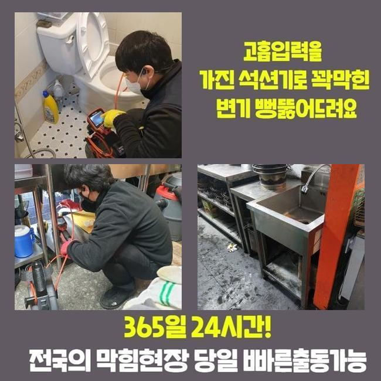

🏠 갈현동싱크대뚫음 원문동 오수맨홀청소 해결방법
용인 싱크대막힘 전문 시공 후기

📋 작업 개요
- 위치: 용인
- 서비스 유형: 싱크대막힘, 배관막힘, 맨홀막힘, 누수수리, 역류해결, 뚫는업체, 배관청소, 고압세척, 설비공사
- 작업 일시: 2025. 2. 7. 21:48
- 업체명: 하수구수사대 (010-5615-2118)
🔍 문제 상황
갈현동싱크대뚫음 원문동 오수맨홀청소 해결방법
주방이나 욕실은 필수불가결한 장소인데요
그래서 생활하다가 급작스럽게 물빠짐이 안된다면 불편은 표현하기 힘들 수준이겠죠
그러나 배수기능이 약해지는 것에 대해 무시하고 넘어가시는 고객분들이 많죠
시일이 지나가면 증상이 소멸되거나 추가적으로 문제가 생기지는 않을거라고 간주하기 때문이죠
반면 실상은 판이합니다
이를 초창기에 적합하게 처치한다면 골치아픈 정황을 막을수 있죠
배수기능이 저하되었다는건 배수관 안쪽에서 하수 배출을 막아세우는 침전물이 존재한다는 방증이겠죠
이물들이 추가적으로 누적돼 한층더 힘겨운 상황으로 발전하기 이전에 전문업체에 의뢰하여 적합하게 검정을 실시하고 순차적으로 청소해야 돼요
저저번주에 내방드린 지점을 신밀하게 설명해드리고자 합니다
배관 정체상황으로 빠른 수습을 원하시는 분들께 도움되기를 간절히 원합니다
저희팀이 내방한 곳은 빌딩의 1층에 자리잡은 분식집이었습니다
고객님께선 화장실과 주방시설에 이르기까지 점진적으로 하수처리가 안되는 상태라고 이야기하셨어요

🔎 원인 분석
💡 전문가 진단: 정밀 진단 장비를 사용하여 슬러지의 고착 여부를 판명하고 타격/세척 작업을 실시했습니다.
일절 안빠지는건 아니었으며 하루지나면 빠져나가는 모습을 보였기에 나중에 처리하자 생각하고 영업하고 있으셨다고 하네요
그 상태로 방치하니 막힘이 심화되어서 물빠짐이 안되었으며 악취 및 역류까지 동반된 것이랍니다
배수관의 구조는 난삽하고 비좁게 형성돼 있죠
그러하기에 겉에서 볼땐 이물들이 얼마큼 존재하는지 파악하기 힘들죠
그러므로 공사현장으로 출발할때는 배관내시경을 꼭 챙겨두어야 합니다
해당 기기의 끝단에는 소형방수카메라가 있어요
그것을 이용해 파악하기 곤란한 파이프 하부까지 선명하게 파악가능하고 잔존물의 형태나 특징들도 알아낼수 있답니다
내시경기기로 관찰한 하수관 안은 굉장히 더러웠습니다
석회물질을 비롯하여 다양한 이물들이 적체되어 있었어요
이러한 물질들이 엉겨서 단단해진 상태로 바뀌어 좁다란 하수관구멍을 틀어막아 물빠짐이 올바로 안되고 있었죠
이대로 놔둔다면 사이즈를 증대시키면서 배관에서 떨어지지 않게 돼요
그리된다면 한층 정황이 나빠지는 것이기에 빨리 고쳐야 했죠
이럴 때에 쓰이는건 플렉스샤프트 체인입니다

🔧 작업 과정
비좁은 틈도 쉽게 투입가능한 이점이 있죠
노즐끝단엔 체인사슬이 결속되어 빠르게 회전하며 파이프내부에 체류중인 견고해진 잔재들을 바스러뜨리게 되죠
즉시 찌꺼기파쇄 시공을 단행하였는데요
드릴에 기기를 체결한뒤 샤프트기계를 돌려 고착화된 노폐물들을 제거해나가기 시작했답니다
어떤곳에 슬러지들이 집중되어 있는지 확인해야 됐기에 내시경설비를 이용한 조사도 병행하였습니다
해당 기기로 적층량이 많은지점을 우선으로 공사한다면 한층 신속하게 처리할수 있답니다
관로 부속들이 훼손되는일이 없도록 조심하면서 노폐물들만을 정밀하게 목표하여 파쇄를 하였습니다
만약 작업중에 하수관에 충격을 가하면 금이 가서 누설현상이 발생할수도 있죠
그러하기에 내시경cctv나 분쇄기기가 구비되는 것이 중요하겠으나 작업자의 기술수준도 우수하여야 하겠습니다
이물들이 집중된 구역을 깔끔하게 분쇄하고난 뒤에 작은 조각들까지 제거해주었어요
그다음 통수시험을 시행했어요
많은양의 오수를 일거에 배수공으로 쏟아부었고 흐름이 지체되거나 역류현상은 없는지를 검사하였어요
별다른 특이사항은 없었으므로 곧바로 또다른 수리공간으로 건너가게 되었네요
이쯤하고 마감한다면 즉시 쓰시기엔 괜찮겠으나 나중에 정체가 발발할 가망이 있어서였답니다
욕실의 가지배관과 결속된 메인배관도 점검하여 이물질의 양을 파악해나가기로 합니다
욕실배관이 막혀버리면 연결되어 있는 횡주배관까지 이물들이 누적되었을 확률이 높아 전체적인 하수관 세척작업을 실시하는게 마땅해요
그래서 횡주관으로 이동해 관측을 시작하였고 저희들의 예측대로 고착화된 이물들을 포착할수가 있었어요
메인관로에서 가지배관까지 전반적으로 세척을 진행했고 찌꺼기가 제거된 깨끗한 관 내부를 포착할수가 있었어요
물티슈를 비롯한 녹기어려운 폐기물들은 욕실을 이용하시면서 다시 쌓일 수 달려있어요
그러하기에 일년에 한두번은 관련기술자에게 의뢰하여 관리하시는게 좋답니다
거기에 더하여 평상시에 배수기능을 보호하는 방책들도 쉬이 이해하시도록 상냥하게 말씀드렸습니다


✅ 작업 완료
배수관이 막혀버리면 다양한 어려움을 맞닥뜨리게 되니 초기에 그런 상황까지 발전하지 않게끔 섬세하게 방예를 하는게 좋답니다
늦은 시간에도 내방가능하다는 것도 설명드렸습니다
20년 이상된 거주지에선 누설도 종종 일어나므로 그것과 관계된 의뢰도 많답니다
이에 바로 뚫음뿐만 아니라 누수시공도 한다는 사실을 설명드렸어요
어디에서 고장이 생겼고 얼마나 되었나 문자나 전화로 알려주시면 더더욱 신속하게 견적을 드릴수 있답니다
그다음엔 약속시간에 맞게 담당자가 전용장비를 갖추고 방문드리니 필요할때 문의주시길 당부드려요




⚠️ 베란다 누수 및 방수 관리 방법
- ✅ 비가 많이 올 때 창틀 주변이나 아래층 천장에 얼룩이 생기는지 정기적으로 확인해 보세요.
- ✅ 우수관 주변 실리콘 마감이 들뜨거나 깨진 틈새가 있는지 손상 여부를 수시로 체크하세요.
- ✅ 베란다 바닥 타일의 줄눈(메지)이 소실되면 그 틈으로 물이 침투하여 누수가 유발됩니다.
- ✅ 누수 의심 증상 발견 시 방치하면 아래층 손실이 커지므로 즉시 전문가의 진단을 받으십시오.
💡 핵심 정리
- 확실한 장비 작업(내시경 점검 및 샤프트 스케일링)으로 원인을 뿌리 뽑습니다.
- 작업 후 1년 이내에 동일한 부위 재발 시 100% 무상 A/S 서비스를 보장합니다.
- 서울 · 경기 · 인천 전 지역에 24시간 언제든 긴급 출동할 수 있도록 항시 대기 중입니다.
❓ 자주 묻는 질문 (FAQ)
🚨 용인 싱크대막힘 문제로 고민이신가요?
정확한 원인 진단과 확실한 시공으로 재발 없는 해결을 약속드립니다.
24시간 긴급 출동 | 서울 · 경기 · 인천 전지역 | 1년 내 재발 시 무상 A/S